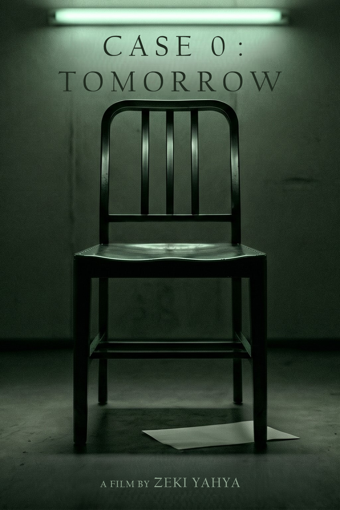
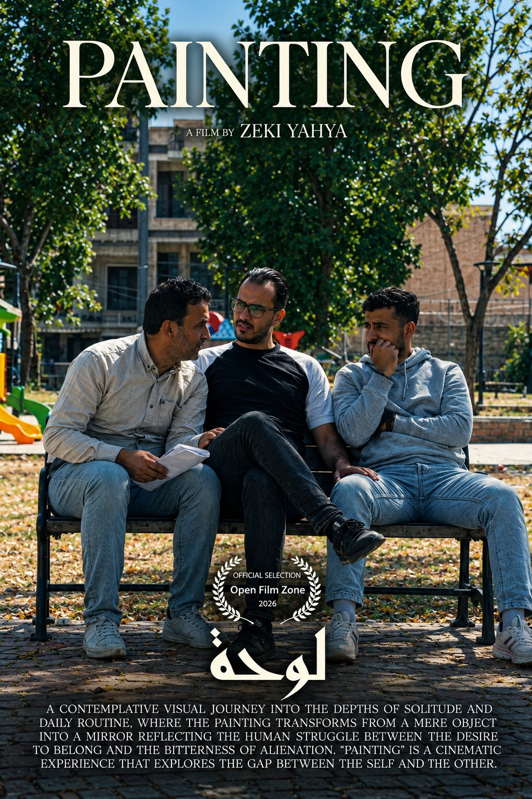

Selected films
Latest works


Case 0: Tomorrow
A cinematic prosecution of time. Moving beyond conventional narrative, this project materializes the bureaucratic postponement of existence—a visual translation of Kafkaesque nightmare and the Nietzschean dread of the modern industrial soul. By stripping the narrative of dialogue and musical comfort, the viewer is forced to physically endure the erosion of waiting, turning the screen into an existential purgatory.
Case 0: TomorrowClick a frame to enlarge


Archaeology of Unborn Faces
A profound cinematic excavation of AI's "latent space." Moving beyond the critique of digital deception, this project investigates the ontology of synthetic existence itself. Embracing Tarkovsky’s philosophy of sculpting in time, the agonizingly slow takes and heavy silence force the viewer to endure the physical weight of time inside a machine that does not comprehend mortality. The flawless faces that emerge are not reflections of reality, but a Baudrillardian "hyperreality" concealing the absence of an origin.
Archaeology of Unborn FacesClick a frame to enlarge


The Great City
Inspired by Friedrich Nietzsche's philosophical masterpiece "Thus Spoke Zarathustra," this avant-garde project serves as a grim cinematic mirror to the contemporary metropolis. It visually dissects the chilling prophecy of the "Last Man"—the ultimate manifestation of spiritual nihilism and cultural decay within the modern crowd. Through an uncompromising experimental lens, the film strips away the romanticism of urban progress to expose the hollow essence of a society trapped in mechanical repetition.
The Great CityClick a frame to enlarge


The Illusion Industry
An intense cinematic critique of hyperreality and digital deception. This project explores the blurred lines between authentic human existence and simulated realities, questioning the manufactured narratives that dominate our visual culture. Stripped of superficial cinematic conventions, the film challenges the viewer to dissect the ontology of the image and the systematic production of illusion in the modern world.
The Illusion IndustryClick a frame to enlarge
Archive


Painting
A contemplative visual journey into the depths of loneliness and everyday routine, where 'the painting' transforms from a mere object into a mirror reflecting the human struggle between the desire to belong and the bitterness of alienation. 'Painting' is a cinematic experience that explores the gap between the self and the other.
PaintingClick a frame to enlarge


Insistence on Life
A comprehensive visual journey pulsating with the spirit of resilience and the will to live in the Iraqi capital, Baghdad. Moving away from familiar clichés, the film delves into the human and cultural depth of the city, showcasing the vibrant details of Baghdad's streets, the flow of daily life, the clarity of the Tigris River and its illuminated bridges, harmonizing with the pulse of families and youth as they create joy amidst challenges. It is a cinematic and artistic documentation of the enduring passion for life.
Insistence on LifeClick a frame to enlarge


Gone
A film about absence and loss, exploring the weight of the unseen and the lingering presence of what has been left behind. The work meditates on the geometry of emptiness and spatial alienation stripped of conventional narrative or dialogue, leaving pure visual traces as a testament to the passage of time.
GoneClick a frame to enlarge


The Pending Echo
An observational field documentary shot in Baghdad and Najaf during the civil movement on February 14, 2014. Through direct visual immersion and spontaneous live dialogues, the film captures the unfiltered voices, debates, and human interactions of citizens within the public space, offering a live, unmediated record of grassroots expression.
The Pending EchoClick a frame to enlarge